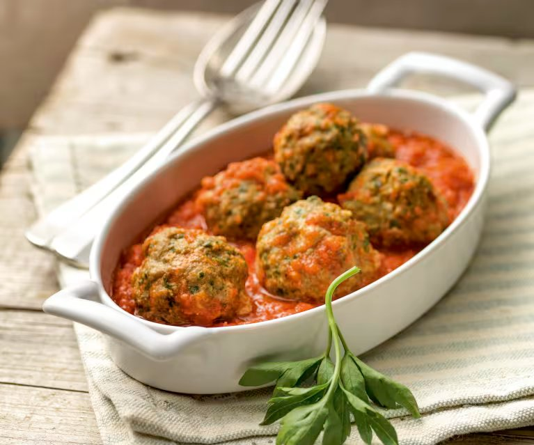

Boulettes de viande à la sauce tomate
Ingredients
- 40 g de pain
- 80 g de lait
- 6 à 12 brins de persil plat
- 2 gousse d'ail
- 400 g de boeuf haché
- 2 oeufs
- 1.5 c. à c. de sel
- 2 pincée de poivre
- huile
- 50 à 80g d'oignon
- 20 g d'huile d'olive
- 600 g de tomates concassées en conserve

Préparation
Étape 1
Tremper 40 g de pain en morceaux dans 80 g de lait.
Étape 2
Mettre 6 à 12 brins de persil plat (les feuilles) et 1 gousse d'ail dans le bol et mixer 5 sec/vitesse 7.
Étape 3
Ajouter 400 g de boeuf haché, 2 oeufs, 0.5 c. à c. de sel, 1 pincée de poivre et le pain essoré (jeter le lait). Mixer 10 sec/vitesse 5, puis transvaser.
Étape 4
Avec les mains huilées, former des boulettes de 4cm et les disposer dans le Varoma et sur le plateau vapeur, préalablement graissés d’huile.
Étape 5
Mettre 1 gousse d'ail, 50 à 80g d'oignon et 20 g d'huile d'olive dans le bol, mixer 5 sec/vitesse 5 puis rissoler 3 min/120ºC/vitesse 1.
Étape 6
Ajouter 600 g de tomates concassées en conserve, 1 c. à c. de sel et 1 pincée de poivre. Mettre le Varoma en place et cuire à la vapeur 20 min/Varoma/vitesse 1. Servir les boulettes nappées de sauce.
Conseils
- Ajouter 50g de parmesan râpé à la viande.
- Remplacer tout ou partie du boeuf par du veau ou du poulet.
- Servir avec du riz ou des pommes de terre vapeur.